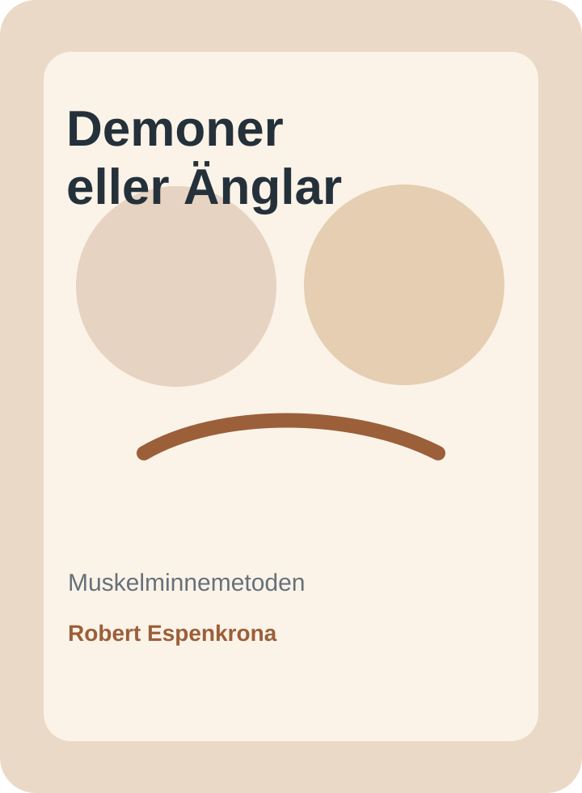
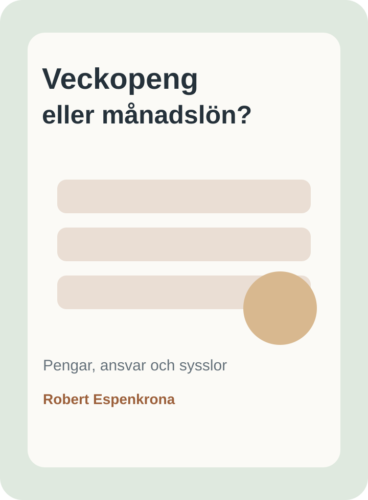
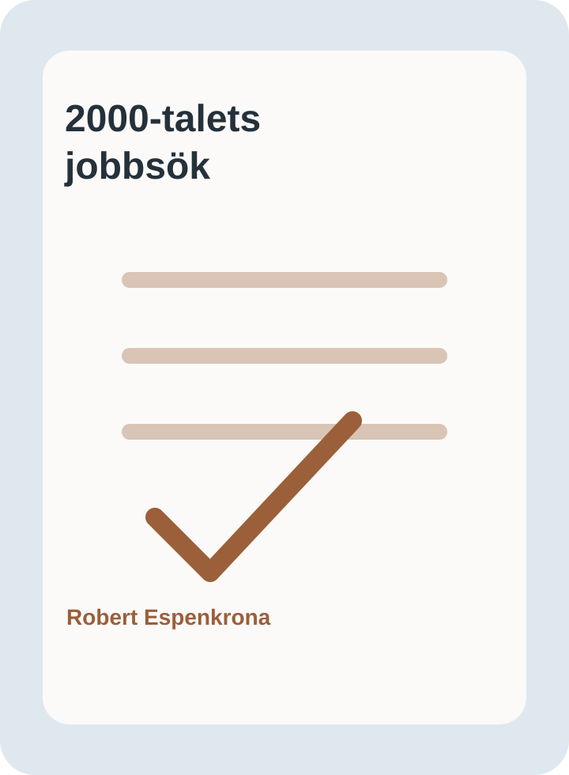

Demoner eller Änglar
En varm och praktisk bok om muskelminnemetoden, föräldraskap, mindre bråk och bättre kontakt med barn.
Läs merSvensk författare och metodskapare
Robert Espenkrona skriver för människor som vill skapa mer lugn, tydlighet och ansvar i vardagen.
Här hittar du praktiska böcker om föräldraskap, barns pengar, ansvar i hemmet och en modern metod för arbetssökande.

Aktuellt
Praktiska verktyg för familjer, föräldrar och arbetssökande. Varje bok och metod är byggd för att vara konkret, lätt att förstå och möjlig att använda direkt.
En varm och praktisk bok om muskelminnemetoden, föräldraskap, mindre bråk och bättre kontakt med barn.
Läs mer
Ett tydligt system för barns pengar, ansvar, sysslor och sparande i hemmet.
PDF: 97 kr Läs mer
En praktisk metod för arbetssökande som vill söka jobb mer strukturerat, aktivt och konkret.
Läs merKontakt
Du är välkommen att höra av dig om innehåll, köp, PDF-böcker eller hur metoderna kan användas i vardagen.